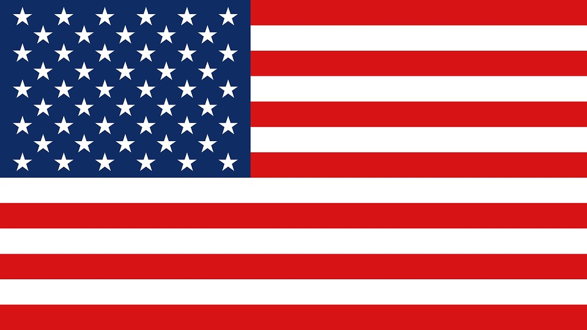

The United States of America
A brief history
The history of the United States is vast and complex, but can be broken down into moments and time periods that divided, unified, and changed the United States into the country it is today: 1700-1799 The American Revolution (sometimes referred to as the American War of Independence or the Revolutionary War) was a conflict which lasted from 1775-1783 and allowed the original thirteen colonies to remain independent from Great Britain. American politician and soldier George Washington became the first President of the United States in 1789, serving two terms. Beginning in Great Britain in the late 1790s, the Industrial Revolution eventually made its way to the United States and changed the focus of our economy and the way we manufacture products.
Information taken from https://www.usa.gov/history>
You can read more here
Sightseeing and Travel
We will calculate and do reasearch on what the best possible route for you is to take, if you want to move from point A to B.
With this process, we will offer you the fastest routes, the most dynamic routes, or just the shortest routes.
We have developed a supreme calculator that will find out if there will be a lot of traffic, or if there is a project going on that makes things go slower, ahead of time.
With this calculator, you can plan out your routes and get the most pleasurable experience traveling and sightseeing
Places to visit
We would like to offer you spots to visit that we think you would enjoy
- New York
- Hawaii
- Las Vegas


Some good to know United States etiquette
The only proper answers to greetings are: how do you do, how are you, how are you doing, fine, great, very well, thank you.
While saying goodbye American may say: We'll have to get together or let's do lunch. This is just a friendly gesture.
Stand while being introduced
Light handshakes with firm grip
Don't stand too close when conversing, americans might find it uncomfortable